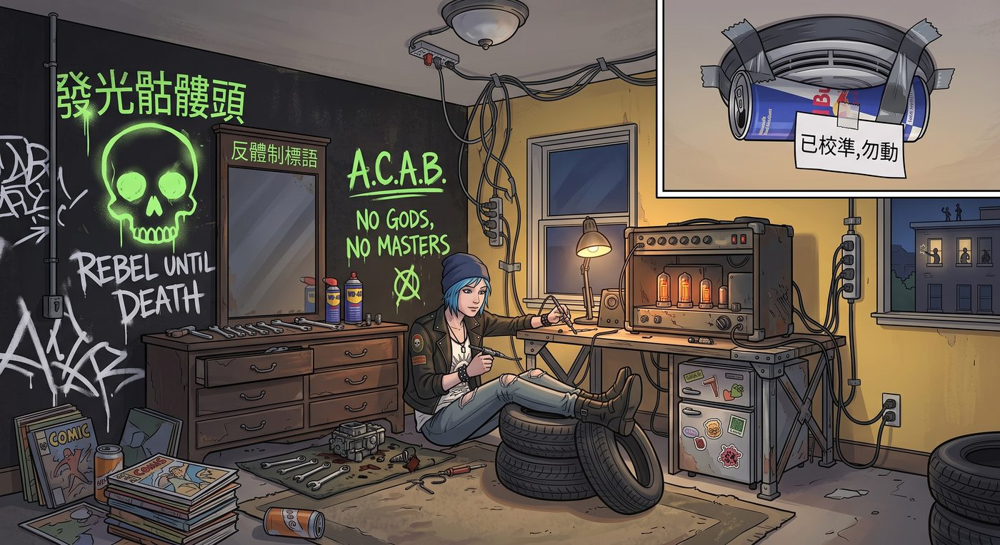

朋克堡壘(倒敘)

一、法外自治特區
重新入學初期,考慮到通勤距離,校方特批 Chloe 暫時入住女生宿舍 Talia Hall——這個決定,很快就讓整棟樓陷入一種前所未有的混亂。
宿管阿姨和舍監們,面對這個「校長親自特批入住、繼父還是校方花錢請回來的安保顧問」的刺頭學生,幾乎沒有人敢真正管束——這幾年校方因為當年監控醜聞把 David 解職,私底下卻還是離不開他對校園系統的熟悉,只好三不五時花錢請他以外部顧問身份回來處理各種疑難雜症,誰也不想在這個節骨眼上,再得罪一個跟校方保持著微妙合作關係的人。每次走廊傳來震天的低音炮聲響,或是隱約飄出一絲可疑的煙味,最後出面處理的,永遠是 David 本人——他會親自走到門口,隔著門板用軍人特有的洪亮嗓音喊話:「Chloe!把低音炮關小點!」
門裡永遠只會傳來一句毫不客氣的回嗆:「滾蛋,Step-douche!」
案發風波未平,學校為了避免再惹上任何輿論麻煩,對 Chloe 的房間採取了一種近乎縱容的「只要不把樓點著就睜一隻眼閉一隻眼」態度——這直接讓她的房間,成了整棟宿舍樓裡一塊誰都不敢輕易踏入的法外自治特區。
二、硬核改裝
不到四十八小時,那間標準的淡黃色清新木質宿舍,就被徹底改造成了一座廢品場風格的朋克堡壘。
梳妝台上擺的不是化妝品,而是整套棘輪扳手、防鏽潤滑劑和幾個拆下來的化油器零件;原本明令禁止塗鴉的牆面,被她一口氣噴成消光黑,滿牆是反體制標語和發光骷髏頭;天花板上的煙霧警報器,被她用一個剪開的紅牛易拉罐和厚膠帶物理封死,旁邊還貼心地留了張紙條——「已校準,勿動」。
為了給她那台跳蚤市場淘來的二手真空管音箱和私裝的微型冰箱供電,她從走廊公共插座私拉了三條加粗排插,搞得整個三樓西側,每到晚上就頻繁跳閘。
隔壁那群原本由 Victoria 統治的精緻名媛圈,徹底啞火——每當 Chloe 叼著棒棒糖、踩著沾滿機油的工裝靴從走廊經過,其他女生都會下意識貼著牆根繞道而行,像是在躲避一顆隨時可能引爆的定時炸彈。
三、地下集散地
消息很快傳開,Chloe 的房間,漸漸變成了一個奇特的地下交流中心。
Warren 是第一個上門的常客,總是抱著某個故障的小玩意——今天是壞掉的隨身電風扇,明天是接觸不良的舊耳機,理由永遠是「反正妳這裡工具齊全,借用一下焊槍」,順便賴著不走,纏著 Chloe 討論最新一期的跑團規則書。
Brooke 來得更直接了當,某次直接拎著一副滑板,面無表情地往桌上一放:「軸承卡死了,五塊錢,妳幫我弄。」交易乾脆俐落,修完轉身就走,毫不拖泥帶水。
Kate 則是完全不同的畫風——她從不需要什麼修理的藉口,只是偶爾放學後,端著兩杯自己泡的花草茶,安安靜靜地敲門進來,在那片消光黑加骷髏頭的混亂佈景裡,找個角落坐下,安靜地看書或畫畫,絲毫不覺得違和。
「妳都不嫌這裡吵?」Chloe 有次忍不住問。
「比起吵,」Kate 抿了口茶,語氣溫和,「我更在意這裡有沒有人願意讓我安靜地待著。妳從來不會多問,這樣就很好。」
一來二去,這間本該屬於「刺頭問題學生」的隔離牢籠,反倒成了幾個性格迥異的孩子,難得能卸下各自偽裝、自在待著的角落。
四、殖民 Max 的房間
Max 恰好被分配在隔壁,這個地理位置上的便利,很快就演變成一場災難。
宿舍管理員某次巡查時,震驚地發現兩人房間之間那扇隔音木門的鎖舌,不知何時已經被銼刀磨平——完全失去了「隔開」兩個房間的功能。
於是 Max 那間原本乾淨整潔、瀰漫著膠片藥水和薰衣草香氣的文藝小房間,不可避免地遭到全面「殖民」——書桌一角堆起了 Chloe 順手扔過來的二手黑膠唱片,床邊多了幾雙沾著機油漬的臭襪子,垃圾桶旁,永遠有一兩個吃了一半就被遺忘的披薩盒。
「妳這是把妳的房間,當成我房間的倉庫延伸了?」Max 舉著一隻臭襪子,哭笑不得。
「這叫資源共享,」Chloe 大言不慚地窩在 Max 的床上,翹著腳,「妳這裡比較香,我待得比較舒服。」
Max 嘆氣,卻也沒有真的把她趕走,只是隨手把那隻襪子扔進洗衣籃,繼續由著這場「殖民行動」一天一天蔓延下去。
五、跳閘與隔音工程
私拉電線導致的頻繁跳閘,終於引起舍監的正式投訴,David 不得不出面處理。
這一次,他沒有選擇繼續每晚隔門喊話的鬧劇,而是拿出一份專業評估——要徹底解決噪音和電力問題,需要重新施作整套隔音牆體工程,外加一組獨立的安全電路,這種規模的工程,少說也得耗上兩三個月,無法在假日隨便動手就能搞定。
「這段時間,」David 對著滿臉茫然的 Chloe 宣布,「妳先搬回家住,等工程完工再說。」
Chloe 沒有太多抗拒的餘地——與其在噪音投訴和跳閘警告之間繼續周旋,不如樂得先回家躲清靜。她把大半的行李、包括那套車庫工具,一併搬回了家裡的房間,只留下那面招牌骷髏頭塗鴉牆,和牆角那個「已校準,勿動」的紅牛罐頭警報器,靜靜等待著漫長的翻修工程。
六、微侵犯的最後一擊
工程進行到一半,David 某天把一份詳細的費用估算單,遞到了 Chloe 面前——隔音材料、專業施工人工、加上重新配置的獨立電路,零零總總加起來,是一筆她這輩子見過最龐大的帳單。
「這筆錢……」Chloe 倒吸一口涼氣,「我這輩子的零用錢加起來都不夠。」
「材料費我先墊,」David語氣一如既往地嚴肅,「但這是妳自己搞出來的問題,總得想辦法自己解決一部分。」
Chloe 苦惱了整整一晚,最終想出了一個離譜卻異常管用的解法——她直接約見了新任 Wells 校長。
「校長,」她一臉正經地開口,「我覺得,學校對我造成了嚴重的『微侵犯』。」
校長皺眉:「什麼意思?」
「你把我塑造成『刺頭浪子回頭』的公關招牌,」Chloe振振有詞,「結果讓我自己承擔宿舍改裝造成的隔音維修費用,這不就是一種『利用弱勢學生形象牟利,卻讓她獨自承擔後果』的系統性壓迫嗎?我要是把這件事捅到媒體那邊,說學校消費『問題學生重返校園』的敘事,卻對她的實際困境視而不見——妳猜,這對學校剛建立起來的『多元包容』形象,會是加分還是減分?」
校長臉色驟變,張口就要反駁,一旁全程旁聽的 Callahan 老師,卻不動聲色地拉了拉他的袖子,湊到他耳邊低聲說了幾句。
校長的表情瞬間變了——從惱怒,轉為一種計算後的妥協。
「這筆隔音工程的費用,」他清了清嗓子,語氣忽然變得慷慨,「就當作校方對『特殊背景學生』的專項支持補助,由學校全額吸收。」
Chloe 差點沒忍住笑出聲,面上卻維持著恰到好處的「委屈接受」表情:「謝謝校長體諒。」
走出校長室,Chloe 忍不住問一直沒說話的 Callahan:「你剛才跟他說了什麼?」
「我跟他算了一筆帳,」Callahan 推了推眼鏡,語氣平淡,「妳那句『微侵犯』要是真傳出去,學校得花多少公關預算滅火,遠比這筆隔音工程費用貴多了。這叫止損型投資,懂?」
Chloe 對他豎起大拇指:「老師,你這腦子,浪費在教書上有點可惜。」
七、完工與搬回
兩個月後,隔音工程終於完工。走廊跳閘的問題徹底解決,那面骷髏頭塗鴉牆,連同重新加固的隔音層,一併被完整保留了下來。
Chloe 站在煥然一新、隔音效果拔群的房間裡,滿意地環顧四周,二話不說,又把行李和那套車庫工具,一件一件搬了回來。
「早知道工程這麼快,」她把最後一箱工具搬進房間,語氣裡帶著點理所當然,「窩在家裡那段日子都快憋出病了,還是這裡有搞頭。」
Max 跟著把幾盆植物擺回窗台,笑著調侃:「妳這是想我了,還是想妳那面骷髏頭牆了?」
「都想,」Chloe 咧嘴一笑,毫不掩飾,「不過牆,可能想得更多一點。」
Max 沒好氣地瞪她一眼,卻也沒反駁,轉身繼續整理自己那間又要開始被「殖民」的房間。
窗外夕陽正好,那面消光黑加骷髏頭的塗鴉牆,和牆角那個依然貼著「已校準,勿動」紙條的紅牛罐頭警報器,重新迎回了它們的主人——這場曾經鬧得整棟樓雞飛狗跳的朋克堡壘傳奇,終究還是在這個房間裡,繼續書寫下去。
(此篇作為時序補丁:先前故事中「Chloe 住在家裡」的章節,時序上均發生於這段隔音工程期間。工程完工後,Chloe 已搬回 Talia Hall 長住,往後正文中出現的「Chloe 的房間」,均指這間宿舍。)